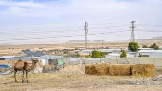

| עצורים בשער שכם, אבנים נזרקו על שוטרים מתפרעים ערבים התגרו בכוחות הביטחון והשליכו בקבוקים, אבנים ואף מוטות ברזל. בתיעוד מאזור שער שכם נראו 4 שוטרים עם נשק שלוף |
|---|
| מפריחים את השממה או מייבשים את הערים? התוכנית להקמת יישובים חדשים בנגב שאושרה אחרי הפיגוע בב"ש באמת תעזור לנגב לפרוח או דווקא תגרום ליישובים הקיימים לנבול? |  |
|---|